Soil & nutrition
Sampling to 60cm, mineral nitrogen testing and a variable-rate plan that puts fertiliser where the crop can actually take it up.
Six services that run as one season plan. Take the whole programme or the single piece your block is missing — the agronomist is the same either way.
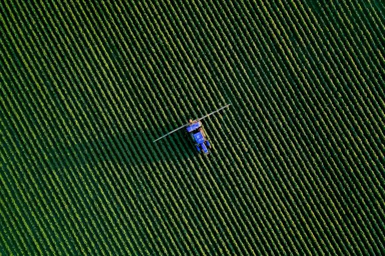
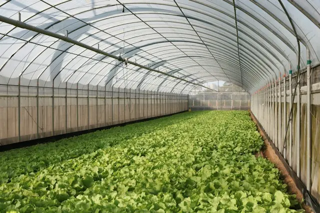

Scroll — the picture keeps up with the list.
Sampling to 60cm, mineral nitrogen testing and a variable-rate plan that puts fertiliser where the crop can actually take it up.
Moisture probes at three depths, pivot and drip scheduling against forecast demand, and the abstraction reporting that goes with it.

Disease and pest pressure walked rather than assumed, spray windows called off the weather station, and every pass logged for assurance.
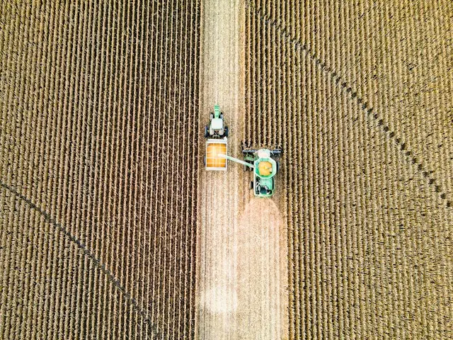
Glass and tunnel work: climate set points, substrate and feed monitoring, and a planting calendar that matches what the buyer ordered.
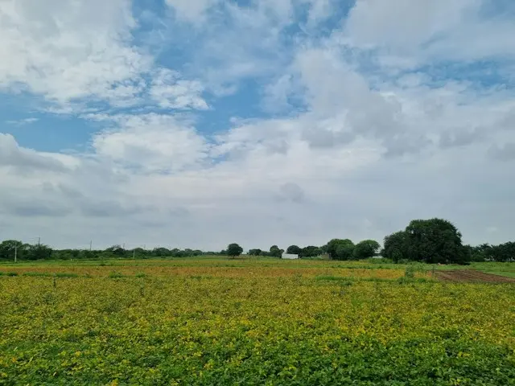
Readiness sampling, crew and haulage booked to the day, and grade-out tracked through the packhouse so the contract is met without a scramble.
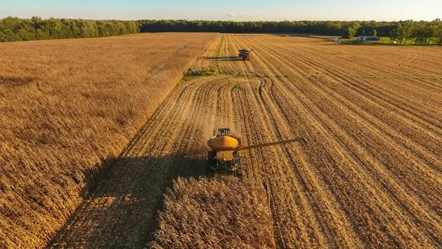
Every probe, pass and load against the block it came from — with a season close-out report that makes next year's plan an argument from evidence.
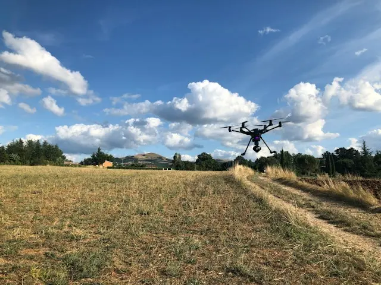
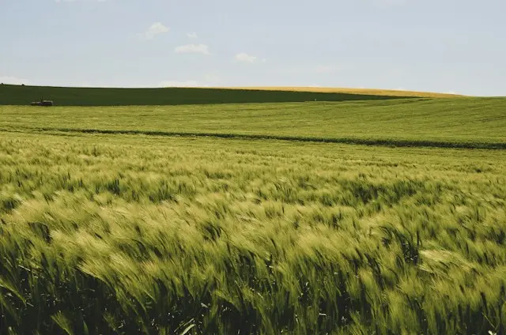
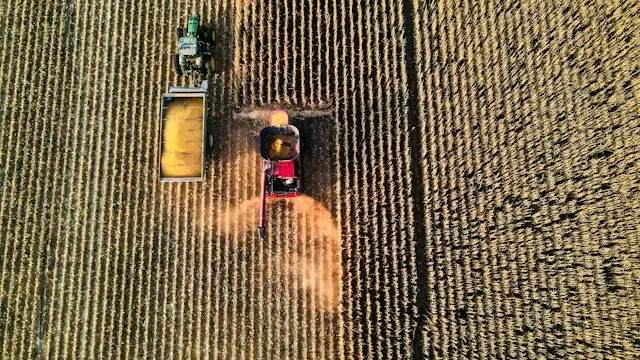
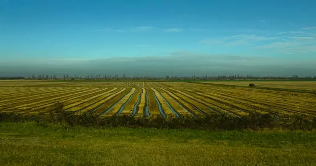
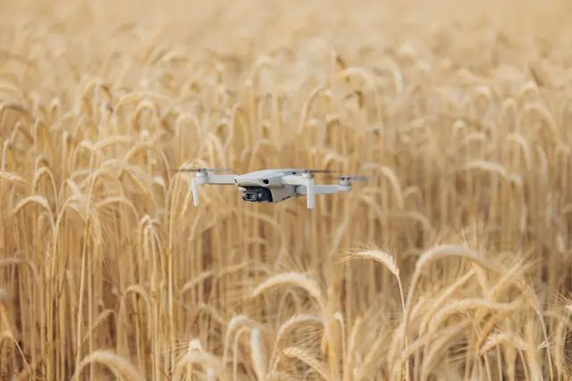
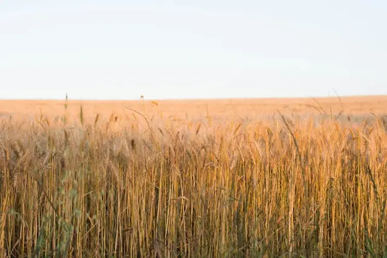
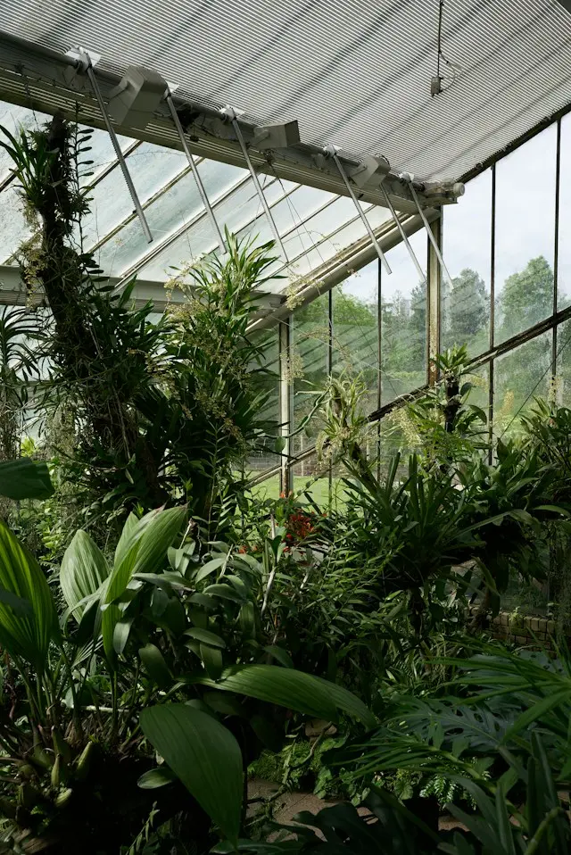
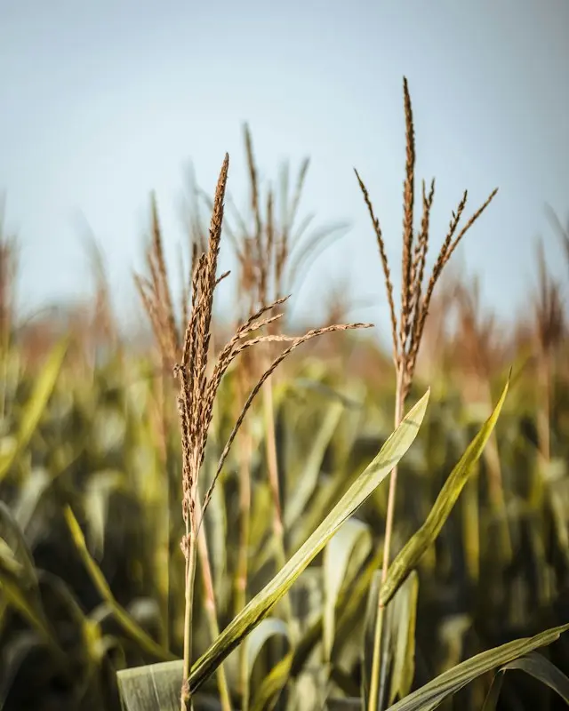
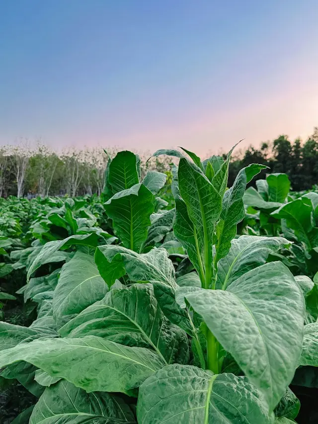
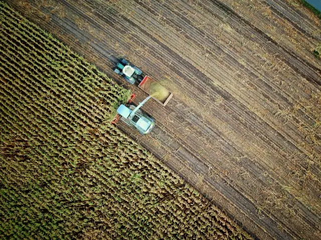
Five stages on every block, whether it is one glasshouse or four hundred hectares.
An hour on the block with the agronomist who would run it. History, soil type and target yield written down before anything is quoted.
Samples away to the lab, probes and a weather station installed, and the block mapped so every later reading has somewhere to live.
One document: nutrition, water, protection and the decision points, with the cost per hectare set out before you commit to it.
Fortnightly scouting, weekly readings and a phone answered by someone who has stood in the block. Plans change when the season does.
Yield mapped against the plan, inputs reconciled, and an honest note on what worked — so next season argues from evidence, not memory.
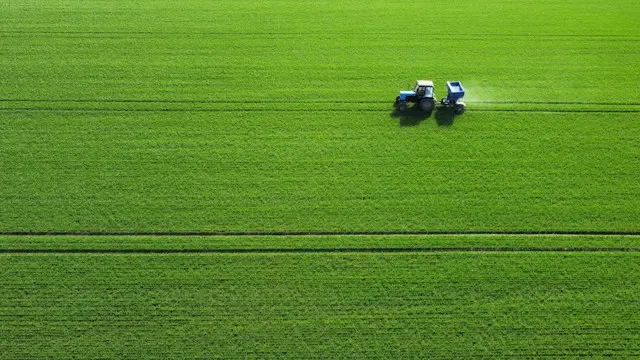
0probes live across managed blocksSensors, stations and survey time come with the programme. We install them, we maintain them, and we take them away at the end if you ever stop.
One piece of the plan — usually soil or water.
38/ ha / seasonThe whole plan, one agronomist, one number.
119/ ha / seasonSeveral holdings, one agronomy team.
Tailored/ on assessmentEverything below is in writing before the first invoice.
| Included | Single | Season | Estate |
|---|---|---|---|
| Field walks | 2 a season | Fortnightly | Weekly |
| Soil sampling | On request | Every 3rd season | Annual, all blocks |
| Moisture probes | — | Installed | Installed |
| Weather station | — | 1 per 120 ha | Per holding |
| Drone survey | Chargeable | 3 a season | 5 a season |
| Grower portal | Yes | Yes | Yes, multi-site |
| Assurance records | Your own | Kept for you | Audit prepared |
| Close-out report | — | January | Quarterly |
Three blocks, first season on the programme — figures as published each January.
What we changed — one heavy nitrogen pass split into three, timed against tissue tests rather than the calendar.
+13% yield · −12% nitrogenWhat we changed — pivots moved off a fixed calendar onto probe readings and forecast demand.
−18% water · yield heldWhat we changed — picking moved four days later and split into two passes off brix and firmness sampling.
+18pt pack-out · −31% rejectsbefore the programmefirst season with us Every figure is the grower's own weighbridge, meter or packhouse record — not a trial plot. Blocks that went backwards are published in the same report.
An hour on the ground, then a written note of soil, target yield and likely input cost — before you commit to anything.